![[Full alt text]](images/Task%20Checker%20Appointment%20Reminder%20section.png)
Meddbase can automatically send email and/or SMS messages. These are send in various scenarios and for a host of reasons.
Click here for more details on SMS communication.
Click here for more details on email & SMS communication in Occupational Health.
Document Templates are the content source for these messages, which means branded and structured messages can be sent automatically by configuring the respective Template accordingly.
All Templates use the built-in Document Editor.
This article will walk you through the new functionality allowing utilising Document Templates in the Task Checker and Work Type configuration, making email/SMS Templates a unified content source for all automated email and SMS messages in Meddbase.
This article will cover the following topics:
Throughout the application Meddbase allows you to select email/SMS Templates for automated emails and/or SMS messages. This allows tailoring the content, and in the case of email templates, adding images, tables, logos, footers etc. and fully utilising the Document Editor functionality.
Furthermore, for both email and SMS Templates, users can utilise Structured Templates, meaning sections of the email/SMS messages can be included/excluded based on conditions set in the Structured Template.
Click here for more details on Structured Templates.
Various email/SMS template selection fields are available across the application. An email template selection field only allows selecting an Email Template, and an SMS Template selection field only allows selecting an SMS Template.
Therefore, email/SMS templates should be created and saved according to their intended use case.
The below article describes email/SMS template selection fields available in various parts of the Meddbase application. The template path will be displayed in each field as Document Type/Template Name. These fields replaced Free Text Subject and Message fields where email and SMS messages could have been configured and a combination of free text and template code.
Throughout this article you will find clickable words, e.g.: appointment, patient, recall, telemedicine. Clicking them will take you to a separate article containing the relevant template codes that can be used when configuring the relevant template.
WARNING
Templates corresponding to the template selection fields will automatically be created in your chamber under Templates > System Templates > Document Type (they can be moved to a different account type if needed). Where a Free Text field was blank, the corresponding Template will also be automatically created blank. Any content in the free text field will be automatically copied to the corresponding Template. Furthermore, some email message sections previously had a Free Text Subject field and other did not. The Template replacing those that did not have a Subject field will be automatically assigned a hard-coded subject line, which can be edited via the Templates tile. Where a section had a Subject fields with content, it will be copied to the corresponding Email Template's subject line.
The Task Checker is a section of Meddbase that allows configuring and defining automated email and SMS messages that will be sent from the system automatically*.
Every patient record in Meddbase contains a Personal Details section where Consent options can be set for that patient. Consent options dictate what type of contact the patients agrees to receive and the system respects these settings throughout. Messages of a given type will not be sent to a patient who hasn't agreed to receive them. More on this can be found here.
To access the Task Checker:
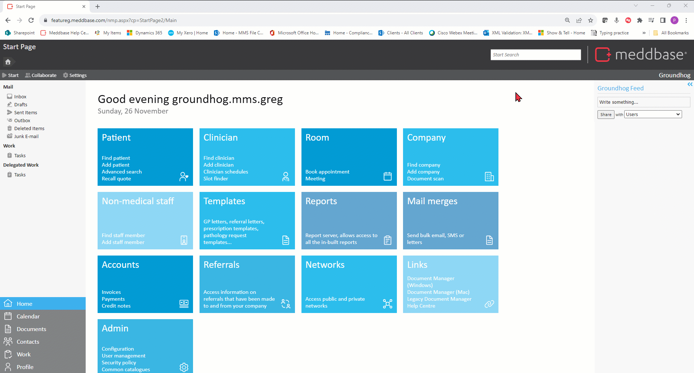
Appointment confirmation messages can be sent to the email address stored against a patient's record when an appointment is booked, either in Meddbase or via the Patient Portal.
Confirmation messages can also be sent to a designated email inbox and a task assigned to the attending doctor.
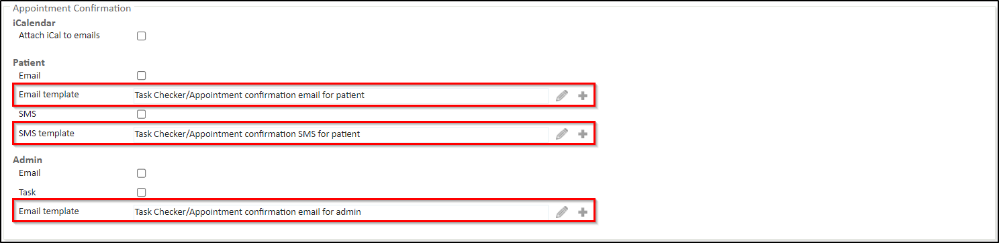
Within the Appointment Confirmation section are the following settings:
| Checkbox/Setting/Field | Description |
| iCalendar > Attach iCal to emails (checkbox) | This checkbox when ticked attaches an .ics calendar invite to confirmation emails. This will create an invite for Patients to add to their Calendar. |
| Patient > Email (checkbox) | This checkbox when ticked turns appointment confirmation emails on. |
| Patient > Email template (template selection field) | This field allows selecting the email template that will generate the appointment confirmation patient email. |
| Patient > SMS (checkbox) | This checkbox when ticked turns appointment confirmation SMS messages on. |
| Patient > SMS template (template selection field) | This field allows selecting the SMS template that will generate the appointment confirmation patient SMS. |
| Admin > Email (checkbox) | This checkbox when ticked turns admin appointment confirmation emails* on. *The appointment confirmation emails sill be sent to the 'Client' address set under Admin > Configuration > Email |
| Admin > Task (checkbox) | This checkbox when ticked creates a task for the attending doctor when an appointment is booked. |
| Admin > Email template (template selection field) | This field allows selecting the email template that will generate the appointment confirmation email for the attending doctor. |
Prior to the appointment start time, appointment reminder messages can be sent to the email address stored against a patient's record when an appointment is booked, either in Meddbase or via the Patient Portal.
Reminder messages can also be sent to a designated email inbox and tasks assigned to users in the Appointment Reminder Admin role group.
Within the Appointment Reminder section are the following settings:
| Checkbox/Setting/Field | Description |
| Schedule > Reminder days (text field) | This field allows defining the no. of days (integer) before the appointment date the reminder will be sent. |
| Schedule > Time (text field) | This field allows defining the time (as HH:MM) the appointment reminder will be sent. |
| Patient > Email (checkbox) | This checkbox when ticked turns appointment reminder patient emails* on. |
| Patient > Email template (template selection field) | This field allows selecting the template that will generate the appointment reminder patient email. |
| Patient > SMS (checkbox) | This checkbox when ticked turns appointment reminder SMS messages on. |
| Patient > SMS template (template selection field) | This field allows selecting the SMS template that will generate the appointment reminder patient SMS. |
| Admin > Email (checkbox) | This checkbox when ticked turns appointment reminder admin emails* on. *The appointment reminder admin emails will be sent to the 'Client' address set under Admin > Configuration > Email |
| Admin > Task (checkbox) | This checkbox when ticked creates a task for the Appointment Reminder Admin role group. |
| Admin > Email template (template selection field) | This field allows selecting the email template that will generate the admin email for the Appointment Reminder Admin role group. |
When a Recall is created in Meddbase automated reminder messages and/or tasks can be sent/generated to patients and/or users at a specific moment in time before the recall due date.
![[Full alt text]](images/Task%20Checker%20Recall%20Reminder%20section.png)
Within the Recall Reminder section are the following settings:
| Checkbox/Setting/Field | Description |
| Schedule > Time (text field) | This field allows defining the time (as HH:MM) the recall reminder will be sent. |
| Schedule > Default reminder time (text field) | This field allows defining the no. of days (integer) before the recall due date, the reminder will be sent. |
| Patient > Email (checkbox) | This checkbox when ticked turns patient recall reminder emails on. |
| Patient > Email template (template selection field) | This field allows allows selecting the email template that will generate the recall reminder patient email. |
| Patient > SMS (checkbox) | This checkbox when ticked turns patient recall reminder SMS messages on. |
| Patient > SMS template (template selection field) | This field allows selecting the SMS template that will generate the recall reminder patient SMS. |
| Admin > Email (checkbox) | This checkbox when ticked turns admin recall reminder emails* on for members of the Recall Reminder Admin role group. *The recall reminder emails sill be sent to the 'Client' address set under Admin > Configuration > Email |
| Admin > Email template (template selection field) | This field allows selecting the email template that will generate the recall reminder patient email for the Recall Reminder Admin role group. |
When a Test, e.g. Blood Lipids, has an 'Expected turn-around time from starting the test to receiving the results (in days)', set under Admin > Service Management > Test, Meddbase can trigger automatic reminder tasks and/or messages to a designated inbox and users, if the Lab does not return the Pathology Result within that time.
![[Full alt text]](images/Task%20Checker%20Service%20Reminder%20section.png)
Within the Service Reminder section are the following settings:
| Checkbox/Setting/Field | Description |
| Schedule > Time (text field) | This field allows defining the time (as HH:MM) the service reminder will be sent. |
| Admin > Email (checkbox) | This checkbox when ticked turns admin service reminder emails* on. The email will be sent when a result from the lab doesn't arrive past its 'Expected turn-around time from starting the test to receiving the results (in days)' *The service reminder emails sill be sent to the 'Client' address set under Admin > Configuration > Email. |
| Admin > Task (checkbox) | This checkbox when ticked creates a task for the Recall Reminder Admin role group when a result from the lab doesn't arrive past its 'Expected turn-around time from starting the test to receiving the results (in days)'. |
| Admin > Email template (template selection field) | This field allows selecting the email template that will generate the service reminder patient email for the Recall Reminder Admin role group. |
Meddbase can send birthday messages to patients automatically according to the date saved on their Patient Records.
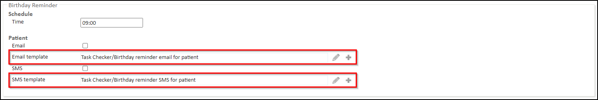
Within the Birthday Reminder section are the following settings:
| Checkbox/Setting/Field | Description |
| Schedule > Time (text field) | This field allows defining the time (as HH:MM) the service reminder will be sent. |
| Patient > Email (checkbox) | This checkbox when ticked turns birthday reminder patient emails on. |
| Patient > Email template (template selection field) | This field allows selecting the email template that will generate the birthday reminder patient email. |
| Patient > SMS (checkbox) | This checkbox when ticked turns birthday reminder patient SMS messages on. |
| Patient > SMS template (template selection field) | This field allows selecting the SMS template that will generate the birthday reminder patient SMS. |
This section is a part of a larger setup process for the Patient Portal feature.
When an appointment type with an associated questionnaire, that questionnaire is sent to the Patient Portal for the attending patient to complete.
Questionnaire reminder email and/or SMS messages can be sent to the patient prior to the appointment start time.
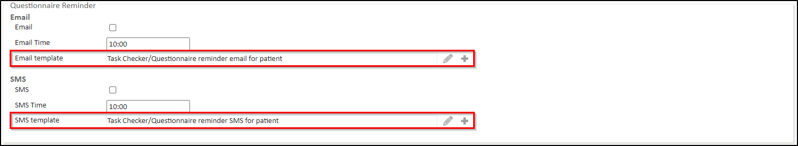
Within the Questionnaire Reminder section are the following settings:
| Checkbox/Setting/Field | Description |
| Email (checkbox) | This checkbox when ticked turns birthday reminder patient emails on. |
| Email Time (text field) | This field allows defining the time (as HH:MM) the questionnaire reminder email will be sent 1 day before the appointment date. |
| Email template (template selection field) | This field allows selecting the email template that will generate the patient questionnaire reminder email. |
| SMS (checkbox) | This checkbox when ticked turns questionnaire SMS messages on. |
| SMS Time (text field) | This field allows defining the time (as HH:MM) the questionnaire reminder SMS will be sent 1 day before the appointment date. |
| SMS template (template selection field) | This field allows selecting the SMS template that will generate the patient questionnaire reminder SMS. |
The Telemedicine is a section of Meddbase that allows selecting the email/SMS templates that will generate email and SMS messages that will be sent from the system automatically when Telemedicine appointment is booked.
To access the Telemedicine section:
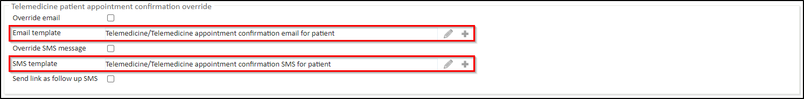
Within the Telemedicine patient appointment confirmation override section are the following settings:
| Checkbox/Setting/Field | Description |
| Override email (checkbox) | This checkbox when ticked enables an override appointment confirmation email* to be sent to the patient when an appointment is booked with the Telemedicine option ticked. *The override email will be sent instead of the email configured (email template selected) in the Admin > Task Checker > Appointment Confirmation section, unless the Appointment Type being booked has a unique Telemedicine confirmation email set up (email template selected) under Admin > Appointment Admin. |
| Email template (template selection field) | This field allows selecting the email template that will generate the telemedicine patient appointment confirmation override email. |
| Override SMS message (checkbox) | This checkbox when ticked enables an override SMS* to be sent to the patient when an appointment is booked with the Telemedicine option ticked. *The override SMS will be sent instead of the message configured (SMS template selected) in the Admin > Task Checker > Appointment Confirmation, unless the Appointment Type being booked has a unique Telemedicine confirmation SMS set up (SMS template selected) under Admin > Appointment Admin. |
| SMS template (template selection field) | This field allows selecting the SMS template that will generate the telemedicine patient appointment confirmation override SMS. |
| Send link as follow up SMS (checkbox) | This checkbox when ticked will result in a separate SMS being sent containing the link* allowing the patient to join the Telemedicine consultation. *This link is generated by the {Appointment.TelemedicineConnection} template code. Please make sure this code is included in your template. |
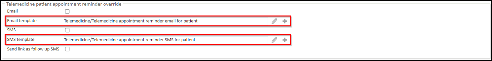
Within the Telemedicine patient appointment reminder override section are the following settings:
| Checkbox/Setting/Field | Description |
| Email (checkbox) | This checkbox when ticked enables an override appointment reminder override email* to be sent to the patient prior to the Start Time of an appointment booked with the Telemedicine option ticked. *The override email will be sent instead of the email configured (email template selected) in the Admin > Task Checker > Appointment Reminder section, however the time before (in days) for the message to be sent will be taken from Admin > Configuration > Task Checker > Appointment Reminder > Schedule > Reminder days. |
| Email template (template selection field) | This field allows selecting the email template that will generate the telemedicine patient appointment reminder override email. |
| SMS (checkbox) | This checkbox when ticked enables an override appointment reminder SMS* to be sent to the patient prior to the Start Time of an appointment booked with the Telemedicine option ticked. *The override SMS will be sent instead of the message configured (SMS template selected) in the Admin > Task Checker > Appointment Reminder section. |
| SMS template (template selection field) | This field allows selecting the SMS template that will generate the telemedicine patient appointment reminder override SMS.. |
| Send link as follow up SMS (checkbox) | This checkbox when ticked will result in a separate SMS being sent prior to the appointment containing the link* allowing the patient to join the Telemedicine consultation. *This link is generated by the {Appointment.TelemedicineConnection} template code. Please make sure this code is included in your template. |
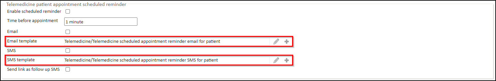
Within the Telemedicine patient appointment scheduled reminder section are the following settings:
| Checkbox/Setting/Field | Description |
| Enable scheduled reminder (checkbox) | This checkbox when ticked enables another override appointment reminder email and/or SMS to be sent to the patient prior to the Start Time of an appointment booked with the Telemedicine option ticked. |
| Time before appointment (text field) | This field allows defining the no. of minutes (integer) before the Start Time of an appointment booked with the Telemedicine option ticked, the other reminder will be sent. |
| Email (checkbox) | This checkbox when ticked enables an appointment reminder email to be sent to the patient prior to the Start Time of an appointment booked with the Telemedicine option ticked. |
| Email template (template selection field) | This field allows selecting the email template that will generate the telemedicine patient appointment reminder email. |
| Override SMS message (checkbox) | This checkbox when ticked enables an appointment reminder SMS to be sent to the patient prior to the Start Time of an appointment booked with the Telemedicine option ticked. |
| SMS template (template selection field) | This field allows selecting the SMS template that will generate the telemedicine patient appointment reminder SMS. |
| Send link as follow up SMS (checkbox) | This checkbox when ticked will result in a separate SMS being sent prior to the appointment containing the link* allowing the patient to join the Telemedicine consultation. *This link is generated by the {Appointment.TelemedicineConnection} template code. Please make sure this code is included in your template. |
Work Types enable utilising the Work section on the Start Page and allow generating and assigning Work Items to individual users and/or groups of users. The way the Work Type is configured determines the behaviour of the corresponding Work Items. Work Items are displayed to the relevant user(s) in separate inboxes labelled according to the Work Type.
Click here for more details on Work Types.
To view default or add a new Work Type:
When an internal referral is made within your Meddbase chamber, or another chamber linked to yours in a Referral Network sends you a referral, a new Work Item is generated and can be viewed by clicking the relevant section from the Start Page.
This Work Type Templates section allows selecting/creating templates that will automatically generate documents, email and/or SMS messages.
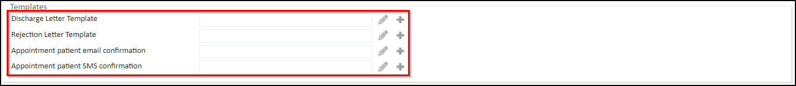
For each template selection field there are some options:
| Field | Description |
| Discharge Letter Template | When an appointment booked from an Incoming Referral Work Item is Arrived and subsequently Discharged (status of the appointment changed to Patient has been discharged / left the building) the user is then prompted to Write Discharge Letter. The discharge letter is generated by the template selected in this field. The template can be change at the point of writing the letter. |
| Rejection Letter Template | When the Discharge/Reject button is clicked on an Incoming Referral Work Item before a booking is made, the user is then prompted to Write Discharge Letter. The rejection letter is generated by the template selected in this field. The template can be change at the point of writing the letter. |
Appointment patient email confirmation | When the Accept Referral for Export to 3rd Party System button is clicked on an Incoming Referral Work Item, the user has the option to record the appointment in Meddbase, even though it was booked in another system. The user also has an option to send an appointment confirmation email to the patient by using the 'You can send a confirmation to the patient by email or a text message' option in the Work Item. This email will be generated by the template selected here. |
| Appointment patient SMS confirmation | When the Accept Referral for Export to 3rd Party System button is clicked on an Incoming Referral Work Item, the user has the option to record the appointment in Meddbase, even though it was booked in another system. The user also has an option to manually send an appointment confirmation SMS to the patient by using the 'You can send a confirmation to the patient by email or a text message' option in the Work Item. This SMS will be generated by the template selected here. |
OH Referrals sent from the Referral Portal, or from another chamber linked to yours in a Referral Network, generates an Incoming OH Referral work item that Meddbase users in your chamber can pick up and process accordingly.
This Work Type contains multiple sections where relevant email/SMS templates can be selected.
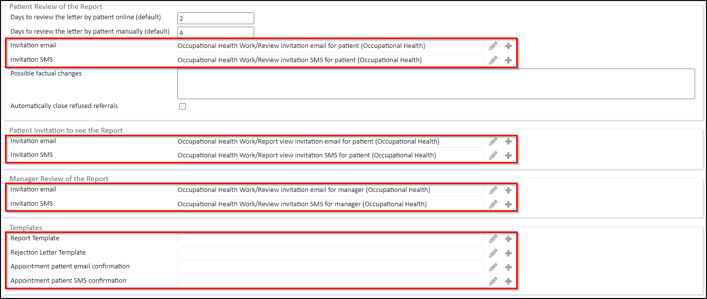
| Patient Review of the Report | |
| Field | Description |
| Invitation email (template selection field) | This field allows selecting the email template that will generate and email inviting the patient to review the report after a Meddbase user clicked 'Send for patient review' on the Incoming OH Referral Work Item. |
| Invitation SMS (template selection field) | This field allows selecting the SMS template that will generate and SMS inviting the patient to review the report after a Meddbase user clicked 'Send for patient review' on the Incoming OH Referral Work Item. |
| Patient Invitation to see the Report | |
| Field | Description |
| Invitation email (template selection field) | This field allows selecting the email template that will generate and email inviting the patient to view the report if the Patient Review step had been skipped for an OH Referral and the report was automatically released to the patient's manager. |
| Invitation SMS (template selection field) | This field allows selecting the SMS template that will generate and SMS inviting the patient to view the report if the Patient Review step had been skipped for an OH Referral and the report was automatically released to the patient's manager. |
| Manager Review of the Report | |
| Field | Description |
| Invitation email (template selection field) | This field allows selecting the email template that will generate an email inviting the Manager to review the report after it had been released (automatically or authorised by patient). |
| Invitation SMS (template selection field) | This field allows selecting the SMS template that will generate an SMS inviting the Manager to review the report after it had been released (automatically or authorised by patient). |
| Templates | |
| Field | Description |
| Report Template | When an appointment booked from an Incoming OH Referral Work Item is Arrived and subsequently Discharged (status of the appointment changed to Patient has been discharged / left the building) the user is then prompted to Write Report. The Report letter is generated by the template selected in this field. The template can be changed at the point of writing the report letter. |
| Rejection Letter Template | When the Discharge/Reject button is clicked on an Incoming OH Referral Work Item before a booking is made, the user is then prompted to Write Rejection Report. The rejection report letter is generated by the template selected in this field. The template can be changed at the point of writing the rejection report letter. |
| Appointment patient email confirmation | When the Accept Referral for Export to 3rd Party System button is clicked on an Incoming OH Referral Work Item, the user has the option to record the appointment in Meddbase, even though it was booked in another system. The user also has an option to send an appointment confirmation email to the patient by using the 'You can send a confirmation to the patient by email or a text message' option in the Work Item. This email will be generated by the template selected here. |
| Appointment patient SMS confirmation | When the Accept Referral for Export to 3rd Party System button is clicked on an Incoming OH Referral Work Item, the user has the option to record the appointment in Meddbase, even though it was booked in another system. The user also has an option to manually send an appointment confirmation SMS to the patient by using the 'You can send a confirmation to the patient by email or a text message' option in the Work Item. This SMS will be generated by the template selected here. |
Meddbase users can utilise this Work Type to make Outbound (OH) Referrals to:
Outbound Referrals can be made:
This Work Type Templates section allows selecting/creating templates that will automatically generate documents, email and/or SMS messages.
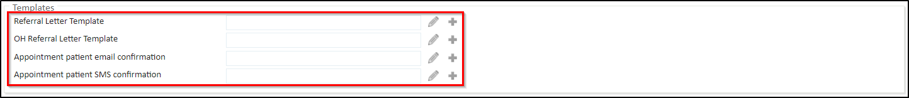
| Field | Description |
| Referral Letter Template | This field allows selecting the email template that will generate the Outbound Referral Letter. This template will be used automatically during the process of making the Outbound Referral. The template can be changed at the point of writing the Outbound Referral detail. |
| OH Referral Letter Template | This field allows selecting the email template that will generate the Outbound OH Referral Letter. This template will be used automatically during the process of making the Outbound OH Referral. The template can be changed at the point of writing the Outbound OH Referral detail. |
| Appointment patient email confirmation | The Outbound Referral can be made to an external provider via email/print, by clicking the 'Can't find a direct provider? Click to try the email/print route' option. This option is used when the external provider is not a Meddbase chamber in your Referral Network. The user making the Outbound Referral has the option to record the appointment in Meddbase for that referral. The user also has an option to send an appointment confirmation email to the patient by using the 'You can send a confirmation to the patient by email or a text message' option in the Outbound Referral Work Item. This email will be generated by the template selected here. |
| Appointment patient SMS confirmation | The Outbound Referral can be made to an external provider via email/print, by clicking the 'Can't find a direct provider? Click to try the email/print route' option. This option is used when the external provider is not a Meddbase chamber in your Referral Network. The user making the Outbound Referral has the option to record the appointment in Meddbase for that referral. The user also has an option to send an appointment confirmation SMS to the patient by using the 'You can send a confirmation to the patient by email or a text message' option in the Outbound Referral Work Item. This SMS will be generated by the template selected here. |
Appointment Types are generally umbrella terms such as ‘Initial Consultation’ and ‘Procedure’.
You may want to break down appointments by length such as ‘Initial Consultation 15 mins’, ‘Initial Consultation 30 mins’, as this is especially helpful where billing is not linear (the cost of a 30 min is not twice the cost of a 15 min appointment).
To view existing Appointment Types or add new Appointment Types:
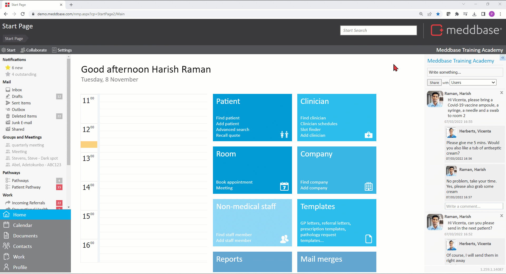
An Appointment Type contains multiple sections where relevant email/SMS templates can be selected.
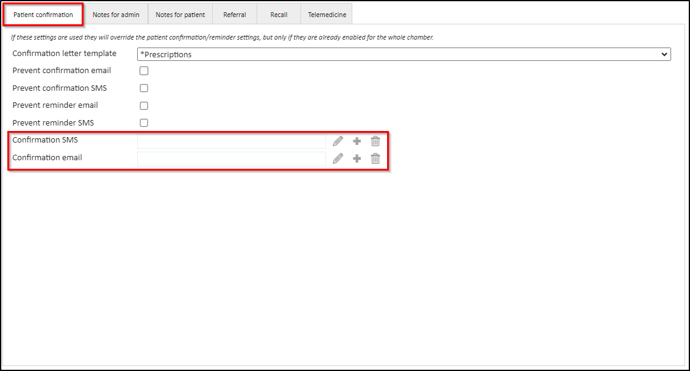
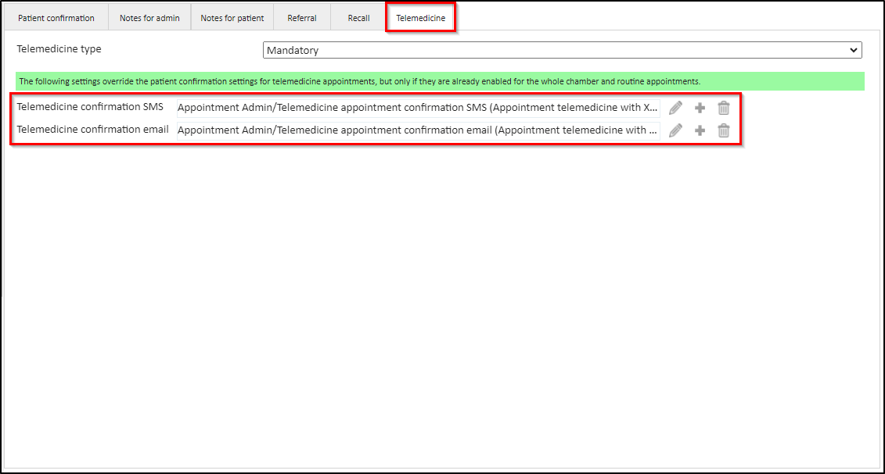
For each template selection field there are some options:
| Patient confirmation | |
| Field | Description |
| Confirmation SMS | This field allows selecting the SMS template that will generate the appointment confirmation SMS*. *This SMS will be sent instead of the message configured in Admin > Configuration > Task Checker > Appointment Confirmation > Email template. |
| Confirmation email | This field allows selecting the email template that will generate the appointment confirmation email*. *This email will be sent instead of the message configured in Admin > Configuration > Task Checker > Appointment Confirmation > SMS template. |
| Telemedicine | |
| Field | Description |
| Telemedicine confirmation SMS | This field allows selecting the SMS template that will generate the telemedicine patient appointment confirmation SMS* when this appointment type is booked with the Telemedicine option ticked. *This SMS will be sent instead of the message configured in Admin > Configuration > Telemedicine > Telemedicine patient appointment confirmation override > SMS template. |
| Telemedicine confirmation email | This field allows selecting the email template that will generate the telemedicine patient appointment confirmation email* when this appointment type is booked with the Telemedicine option ticked. *This email will be sent instead of the message configured in Admin > Configuration > Telemedicine > Telemedicine patient appointment confirmation override > Email template. |
Meddbase allows emailing Debtors an Invoice PDF Document with an auto-generated email body.
A Template that will generate the Invoice PDF Document and a Template that will populate the email body can be selected as follows:
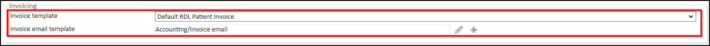
| Field/Dropdown | Description |
| Invoice template | This dropdown allows selecting the Default Patient Debtor Invoice Template that will generate the Invoice PDF when clicking Actions > Email Invoice in a respective invoice. |
| Invoice email template | This field allows selecting the Template that will generate the body of the email when clicking Actions > Email Invoice in a respective invoice. |
All Templates in your Meddbase chamber can be viewed and/or edited using the built-in Document Editor via the Templates tile on the Start Page.
New Templates can be added as well.
When editing a Template that happens to be in use in any of the aforementioned email/SMS selection fields, a Meddbase user will be presented with a pop-up warning when saving the Template in the Document Editor.
The warning will inform the user where the Template is used and requires clicking Yes to confirm saving the changes*.
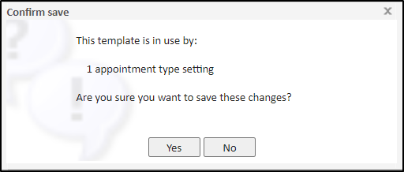
*The pop-up warning will appear when saving a Template in the Document Editor even if no changes were made, if that Template is utilised in any setting.